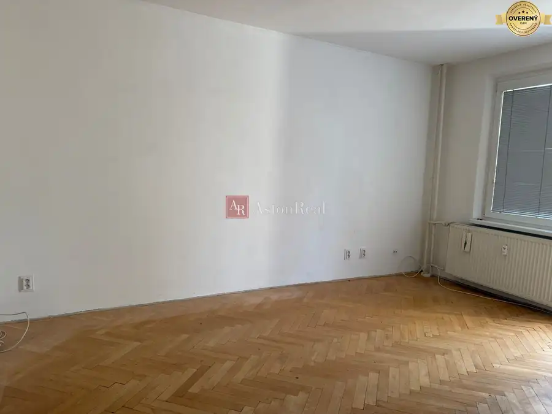
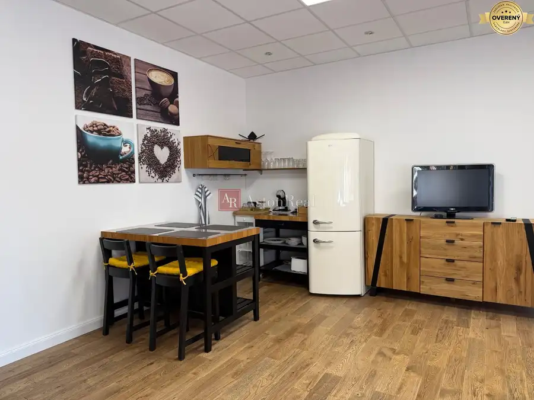
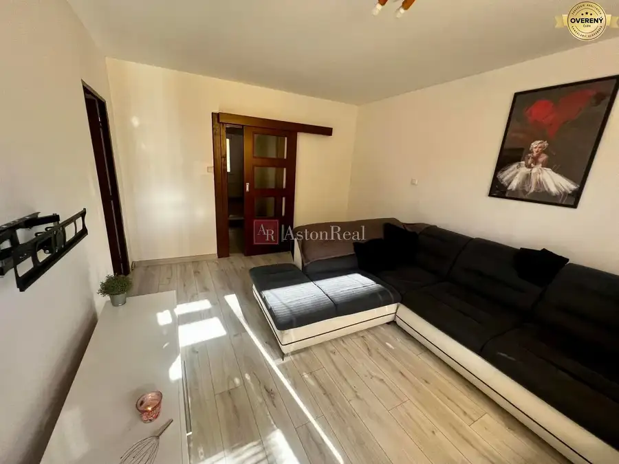
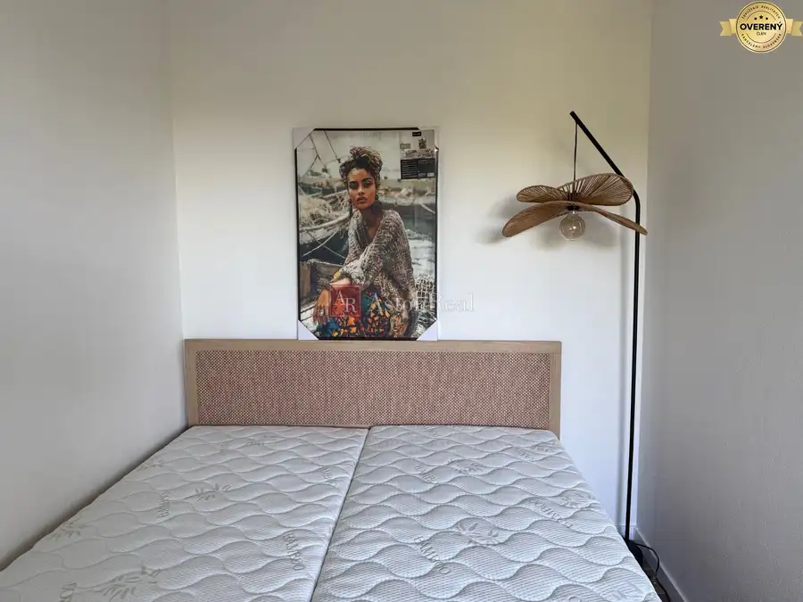

Aktuálna ponuka
Nehnuteľnosti, ktoré ponúkam
8 nehnuteľností na predaj a prenájom. Vyberte typ, alebo napíšte lokalitu.
8 z 8 ponúk
 Záhrady7
19 000 €PREDAJ: Záhrada, rozlohou 392 m2 nad Tulskou - Banská Bystrica
Banská Bystrica
392 m²
Astonreal ponúka na predaj záhradu v záhradkárskej oblasti nad ul. Moskovskou v Banskej Bystrici. Celková výmera záhrady je 392 m2, je mierne…
Záhrady7
19 000 €PREDAJ: Záhrada, rozlohou 392 m2 nad Tulskou - Banská Bystrica
Banská Bystrica
392 m²
Astonreal ponúka na predaj záhradu v záhradkárskej oblasti nad ul. Moskovskou v Banskej Bystrici. Celková výmera záhrady je 392 m2, je mierne…
 Chaty a chalupy10
137 000 €PREDAJ: DOM (CHALUPA) zastavaná plocha 135 m2 - Moštenica
Moštenica
3-izbový150 m²
AstonReal vo výhradnom zastúpení majiteľa ponuka na predaj rodinný dom/chalupu v obci Moštenica. Dom sa nachádza priamo v centre obci, tichom a…
Chaty a chalupy10
137 000 €PREDAJ: DOM (CHALUPA) zastavaná plocha 135 m2 - Moštenica
Moštenica
3-izbový150 m²
AstonReal vo výhradnom zastúpení majiteľa ponuka na predaj rodinný dom/chalupu v obci Moštenica. Dom sa nachádza priamo v centre obci, tichom a…
 Rodinné domy2
600 000 €HĽADÁME pre nášho klienta NOVOSTAVBU/ rodinný dom v Banskej Bystrici
3-izbový600 m²
AstonReal súrne hľadá pre klienta NOVOSTAVBU rodinného domu - Banská Bystrica. Za ponuky vopred ďakujem. V prípade záujmu ma prosím kontaktujte na…
Rodinné domy2
600 000 €HĽADÁME pre nášho klienta NOVOSTAVBU/ rodinný dom v Banskej Bystrici
3-izbový600 m²
AstonReal súrne hľadá pre klienta NOVOSTAVBU rodinného domu - Banská Bystrica. Za ponuky vopred ďakujem. V prípade záujmu ma prosím kontaktujte na…
 Apartmány10
Cena dohodouExkluzívne! Na predaj 2 izb. apartmán s krbom v AD Panoráma - Donovaly
Donovaly
2-izbový64 m²
AstonReal ponuka na predaj 2 izb. apartmán, 64m2 v apartmánovom dome Panoráma v obľúbenom lyžiarskom stredisku Donovaly. Donovaly sú celoročne…
Apartmány10
Cena dohodouExkluzívne! Na predaj 2 izb. apartmán s krbom v AD Panoráma - Donovaly
Donovaly
2-izbový64 m²
AstonReal ponuka na predaj 2 izb. apartmán, 64m2 v apartmánovom dome Panoráma v obľúbenom lyžiarskom stredisku Donovaly. Donovaly sú celoročne…

Byt9 205 000 €PREDAJ: rekonštruovaný 3 izb.byt s lodžiou na ul. Tulská - B. Bystrica Banská Bystrica 3-izbový64 m²2. podlažie AstonReal vo výhradnom zastúpení majiteľa ponuka na predaj 3 izb. byt s lodžiou na ul. Tulská, časť Fončorda v Banskej Bystrici. Byt o výmere 64 m2…
Byt4 Cena dohodouPRENÁJOM nadštandardný byt/apartmán, ul. Rudlovská cesta, centrum B.B. Banská Bystrica 1-izbový50 m² AstonReal ponúka na prenájom nadštandardný byt/apartmán v rodinnom dome so samostatným vstupom. Nachádza sa v blízkosti centra – ul. Rudlovská cesta,…
BytRezervované8 135 000 €2 izb. byt, zrekonštruovaný, ul. J. Baníka - Zvolen Zvolen 2-izbový59 m²3. podlažie AstonReal vo výhradnom zastúpení majiteľa ponúka na predaj slnečný dvojizbový byt v osobnom vlastníctve v zateplenom bytovom dome vo Zvolene na…
BytRezervované8 Cena dohodouPrenájom 1 izb. byt, bauring, ul. Oremburská - B. Bystrica Banská Bystrica 1-izbový30 m²5. podlažie AstonReal ponúka na prenájom 1 izb. bauring na ul. Orenburská, časť Fončorda - Banská Bystrica. Prešiel kompletnou rekonštrukciou, čisto - novo…Tomuto výberu zatiaľ nezodpovedá žiadna ponuka. Napíšte mi, čo hľadáte.
Hľadám pre klientov
Máte takúto nehnuteľnosť? Ozvite sa.
HĽADÁM: 2 izb. byt, rozlohou 56m2 , Zvolen - MôťováZvolen · 56 m²Ponúknuť nehnuteľnosťHľadám pre nášho klienta rodinný dom s pozemkom v blízkosti B.B.Banská Bystrica · 120 m²Ponúknuť nehnuteľnosťHľadám 2 izb. byt v Radvani / Fončorda s balkónom - Banská BystricaBanská Bystrica · 59 m²Ponúknuť nehnuteľnosť